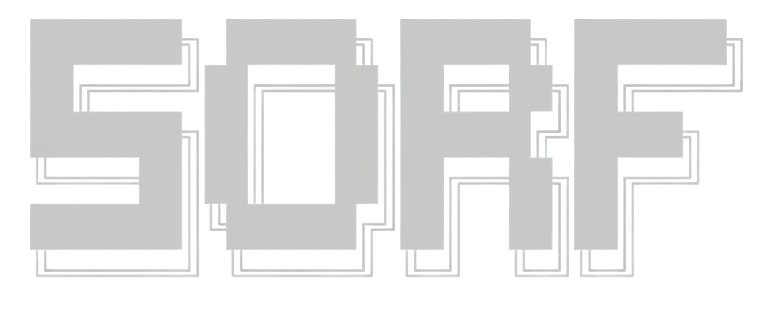

Sistema de Otimização de Rotas Urbanas
Rede urbana baseada em grafos ponderados com cálculo de menor rota pelo algoritmo de Dijkstra.
Calcular rota
Ferraz de Vasconcelos
Selecione uma origem e um destino.

Rede urbana baseada em grafos ponderados com cálculo de menor rota pelo algoritmo de Dijkstra.